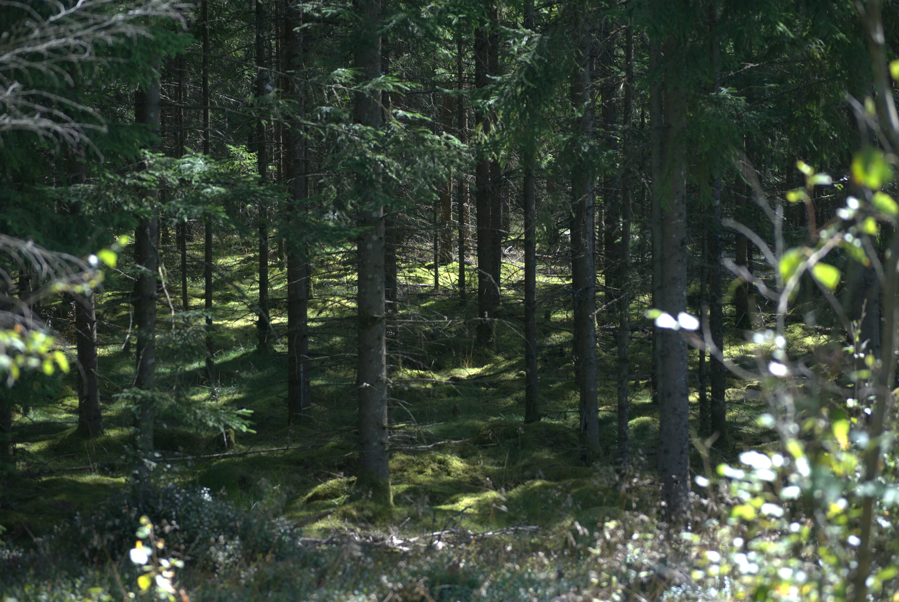
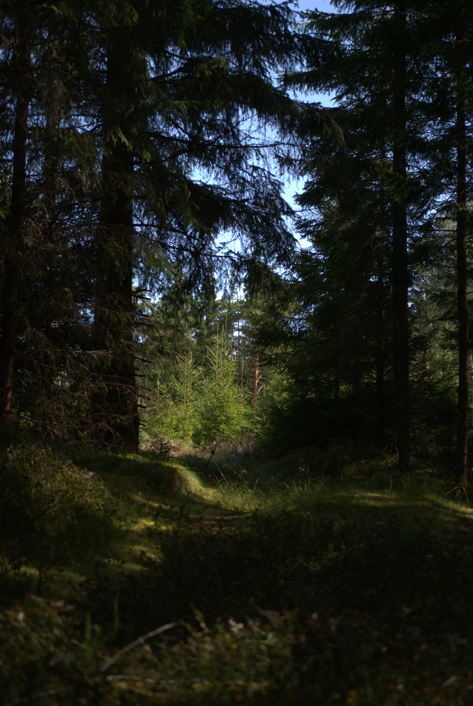
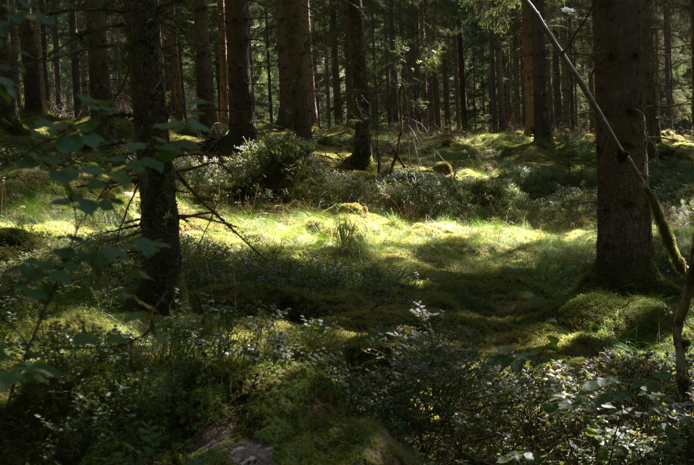
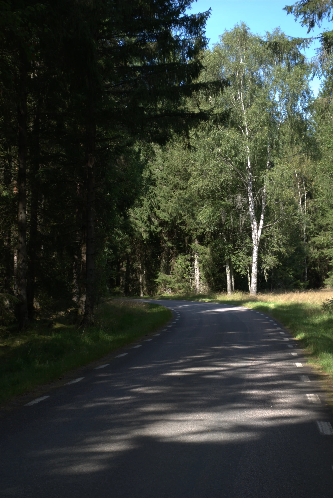
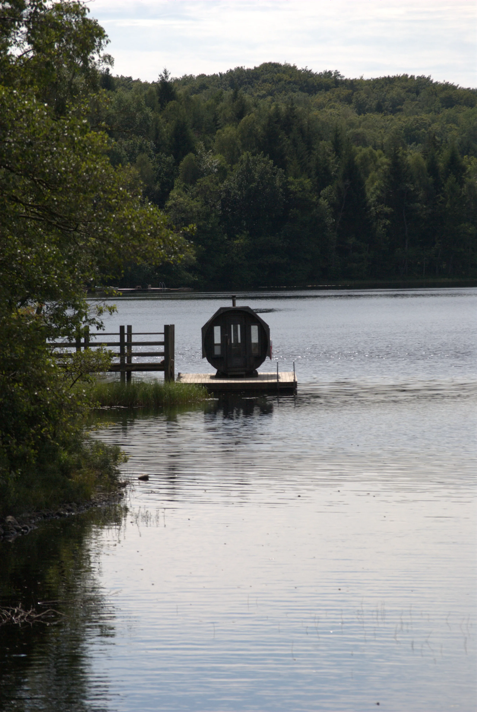
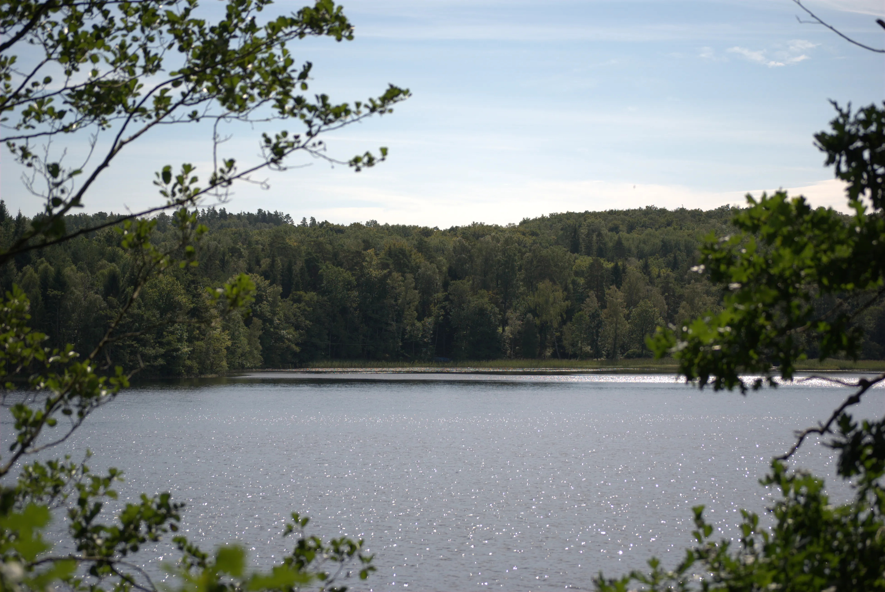
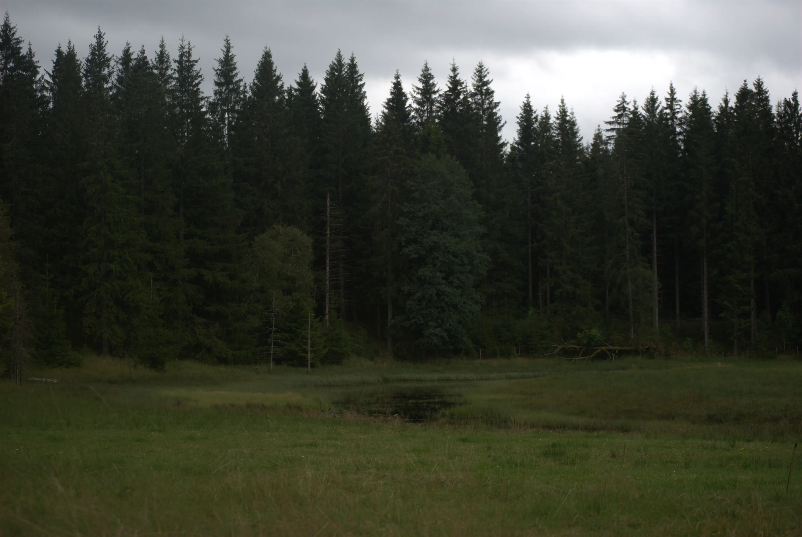
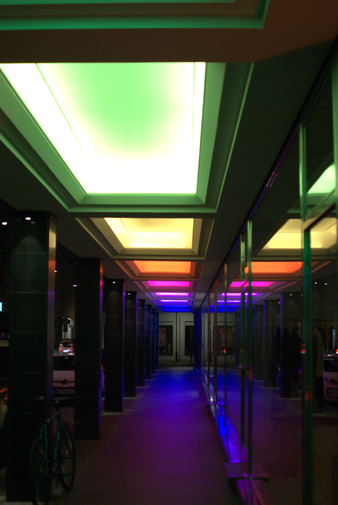
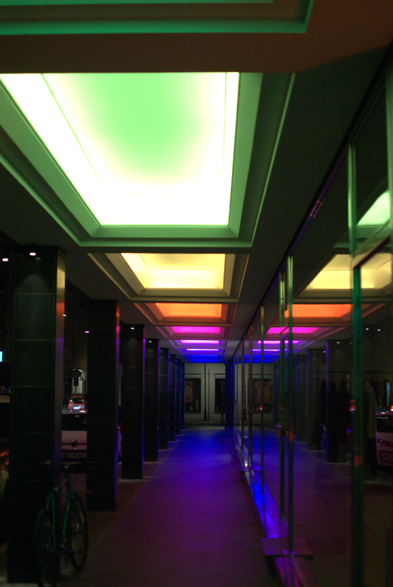
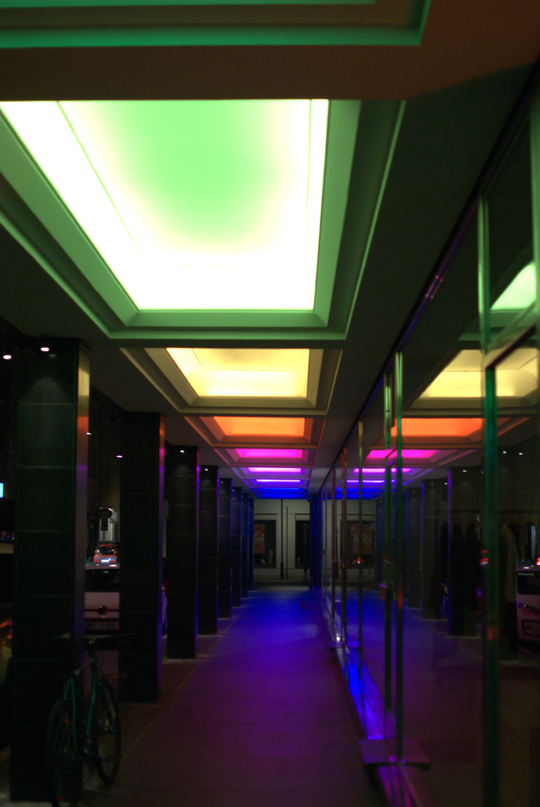

Photography – Sverige & Danmark 2024
Click the image to enlarge it or to open it in a new tab!
The images have been compressed and turned into the webp format to save bandwidth — apologies if the quality isn't the best :(
For the full resolution, please contact me!









 


[home] [index]